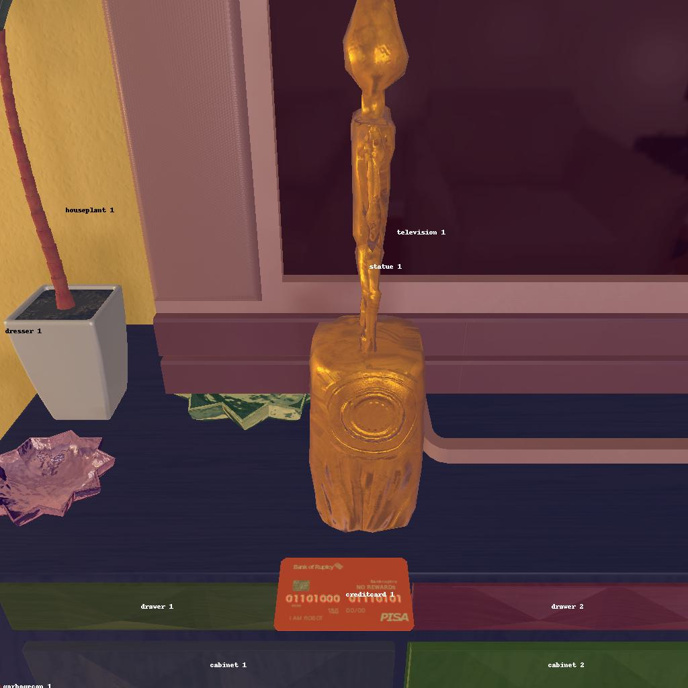
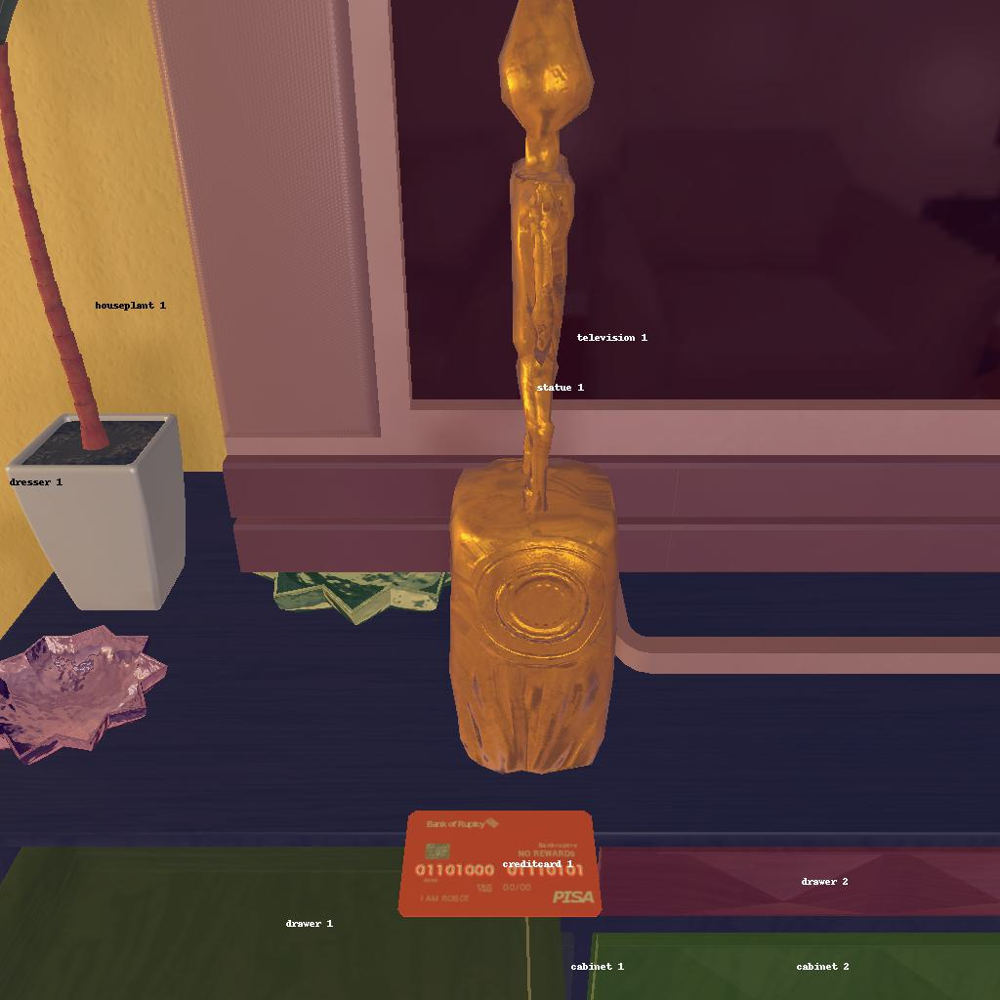

---------------------------------------------------------task: 7---------------------------------------------------------
--------------------------------------------------------------------------------------------------------------------------------------------------------------------
--------------------------------------------------------------------------------------------------------------------------------------------------------------------
Step:--------------------------------------------------------------------------9-------------------------------------------------------------------------------
----------------------------------------
VLM Prompt:
Image1:
Image2:
**Instruction**
1. Analyze the provided image to identify all visible household objects, focusing on those relevant to the task description "put some creditcard on coffeetable."
2. Use the analysis of the image and the task hint "The agent must find an object of the desired type, pick it up, find the correct location to place it, and put it down there." to answer the question: what is the most reasonable action in the choices for the task description "put some creditcard on coffeetable"?
4. Decide and write the answer using the template: The answer is: (i): , where i is the real number. If there is no desired object in the image, search every place based on **Initial Observation** to find the object. And if no one is exactly correct, choose a similar answer.
**Initial Observation**
You are in the middle of a room. Looking quickly around you, you can see armchair (1-2), dresser (1), garbagecan (1), cabinet (1-4), drawer (1-4), coffeetable (1), sidetable (1), sofa (1)
**Answer Choices**
(1): go to armchair 1
(2): go to armchair 2
(3): go to dresser 1
(4): go to garbagecan 1
(5): go to cabinet 1
(6): go to drawer 2
(7): go to cabinet 2
(8): go to drawer 3
(9): go to cabinet 3
(10): go to drawer 4
(11): go to cabinet 4
(12): go to coffeetable 1
(13): go to sidetable 1
(14): go to sofa 1
(15): close drawer 1
(16): put creditcard 1 in/on drawer 1
(17): examine drawer 1
**Answer**
Let's think step by step by following the instructions.
----------------------------------------
----------------------------------------
Original Response:
First, we need to identify all visible household objects relevant to the task description "put some creditcard on coffeetable." Looking at the images provided, we can see a creditcard on top of drawer 1.
Next, we analyze the task hint. The agent needs to find an object of the desired type, which we have identified as the creditcard. Then, the agent must pick it up and find the correct location to place it, which is the coffeetable, and put it down there.
Considering the initial observation, we know the locations of various objects in the room, including the coffeetable.
Based on this analysis, the most reasonable action for the task description "put some creditcard on coffeetable" from the choices given would be to first pick up the creditcard from drawer 1 and then go to the coffeetable to place it there. However, the options do not include picking up the creditcard; they only include actions related to moving to specific locations or interacting with drawer 1.
Since picking up the creditcard is not an option, the next best action is to move towards the coffeetable, as that is the target location for placing the creditcard.
The answer is: (12): go to coffeetable 1
----------------------------------------
----------------------------------------
>>> Refine Original VLM Response and Get Pure Action: go to coffeetable 1
----------------------------------------
-----------------------------------------------------------------
Running time: 13.984121799468994 seconds
Total Money: 3.172909999999999
-----------------------------------------------------------------
-----------------------------------------------------------------
Text Observation:You arrive at loc 12. On the coffeetable 1, you see a box 1, a remotecontrol 1, and a lightswitch 1.
-----------------------------------------------------------------
UNSUCCEED